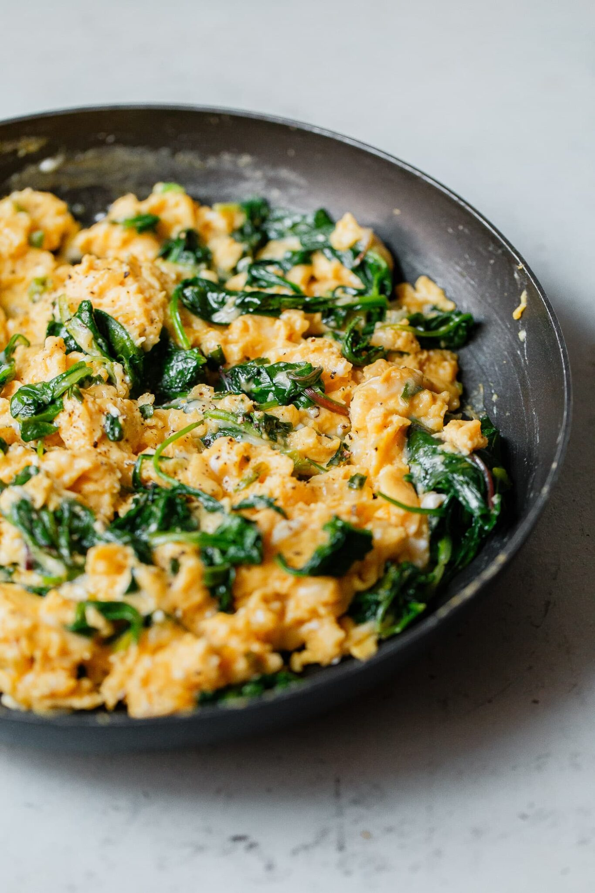

Scrambled Eggs

A delighful, heartwarming dish!
Who doesn't love themselves a fluffy serving of scrambled eggs seasoned with fresh herbs on a lazy
Sunday? It's a classic. You love it. I love it. Everyone loves it.
And that is exactly why today we will be learning how to make ourselves the perfect bowl of
delicious scrambled egg! Let's get started!
Ingredients
- Eggs
- Milk / Water
- Olive oil or butter
- Salt and
- Pepper
Steps
-
First, beat the eggs. Place them in a medium bowl, and whisk until the yolk and whites
are thoroughly combined.
-
Add the milk or water, and whisk again! The beaten eggs should be an even yellow color,
with no translucent spots or streaks.
-
Next, gently preheat the pan. Brush a small nonstick skillet with olive oil, or melt a
little butter inside it. Warm the skillet over medium heat.
-
Finally, cook. Pour in the egg mixture, and let it cook for a few seconds, undisturbed.
Then, pull a rubber spatula across the bottom of the pan to form large, soft curds of
scrambled eggs.
-
Continue cooking over medium-low heat, folding and stirring the eggs every few seconds.
As you work, make sure to scrape your spatula along the bottom and sides of the pan
to continue to form curds and to prevent any part of the eggs from drying out.
-
For a soft, creamy scramble, stop when the eggs are mostly set, but a little liquid
egg remains. Remove the pan from the heat, and season to taste with salt and pepper.
-
You are done! Enjoy your meal!